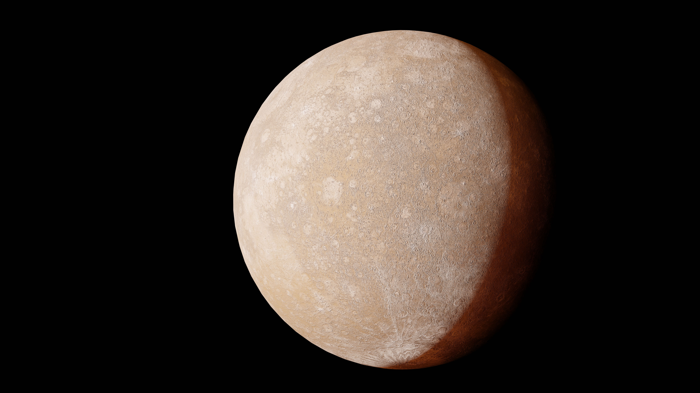
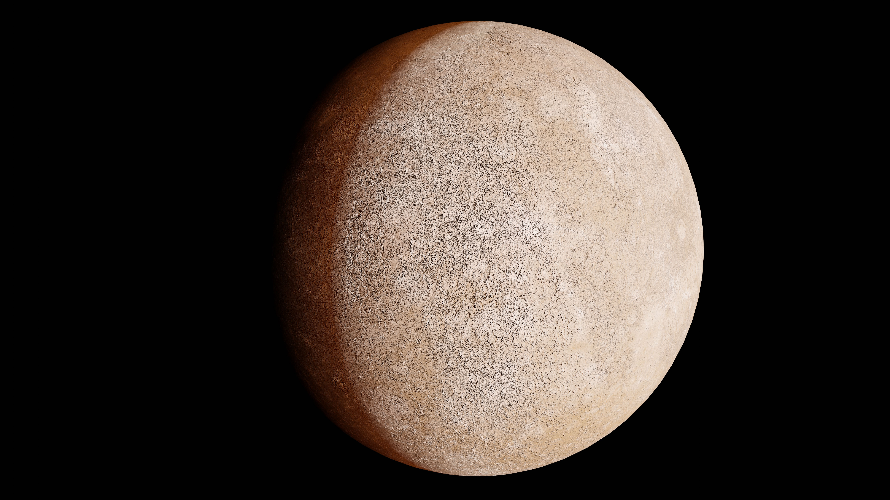
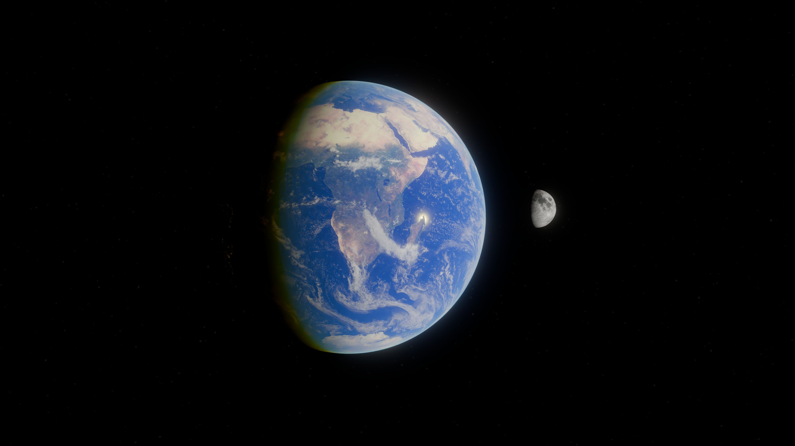
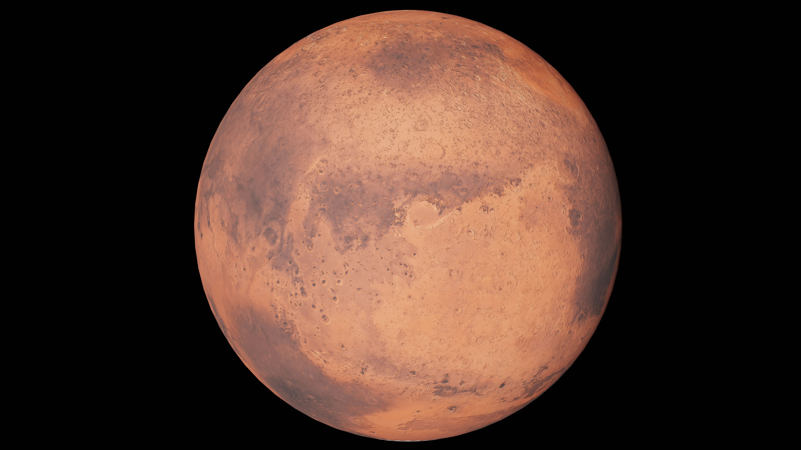
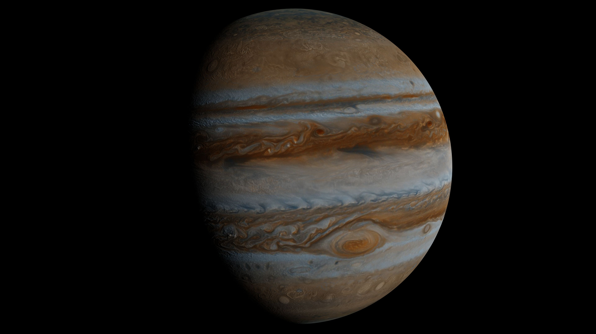
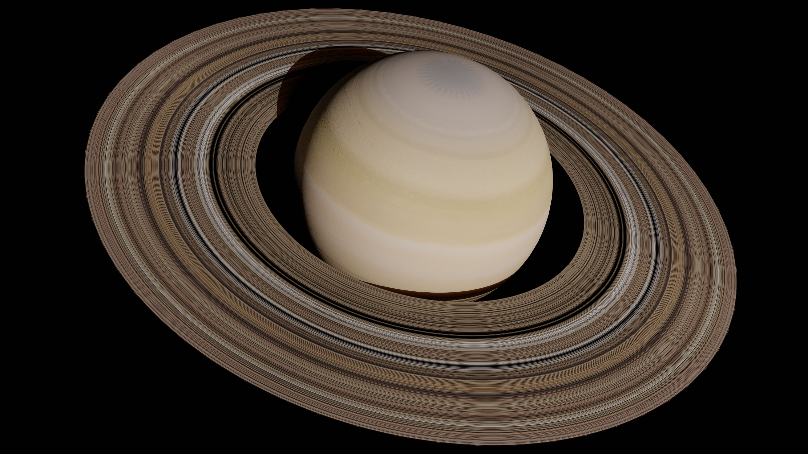
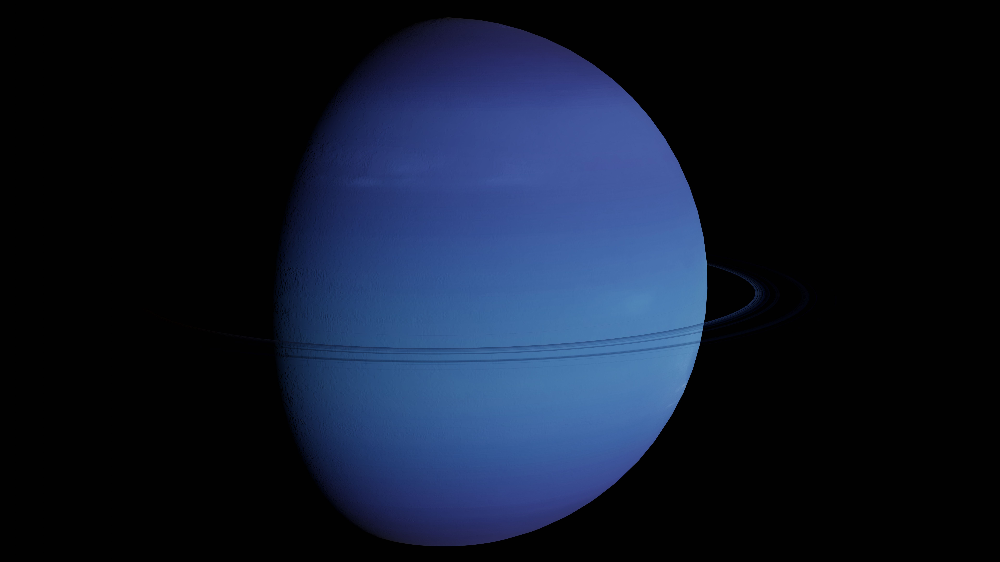
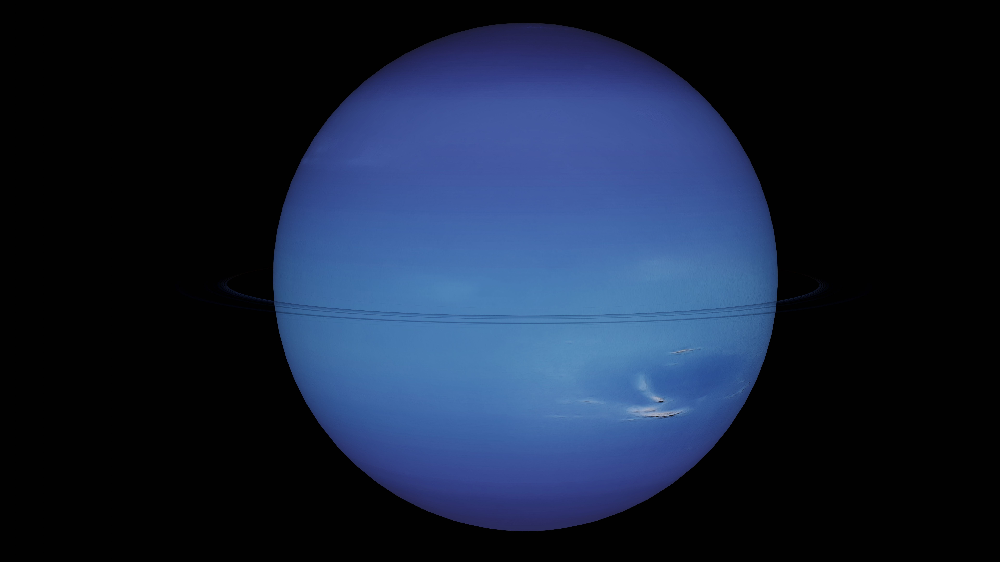

ABOUT PAGE
The solar system is a fascinating place filled with planets, moons, asteroids, and comets. At its centre is the Sun, a star that provides light and heat to the planets. Our solar system formed about 4.6 billion years ago and contains eight main planets, each with its own unique features.
Mercury
Mercury is the smallest planet and the closest to the Sun.

Venus
Venus is the hottest planet because of its thick atmosphere.

Earth
Earth is our home and the only planet currently known to support life.

Mars
Mars is known as the Red Planet because of its reddish surface.

Jupiter
Jupiter is the largest planet and is famous for its giant storms.

Saturn
Saturn is well known for its beautiful rings made of ice and rock.

Uranus
Uranus is an ice giant that rotates on its side, while

Neptune
Neptune is the farthest planet from the Sun and has extremely powerful winds.

Beyond the eight planets, the solar system also contains dwarf planets, such as Pluto, as well as countless moons, asteroids, and comets. Scientists continue to explore space to discover new things and understand how our solar system works. There is still so much to learn about the amazing universe we live in!
Try the quiz if you are done reading this page.